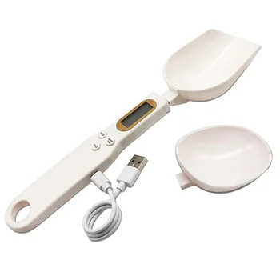

Achieving culinary perfection often hinges on precision, especially when it comes to measuring ingredients. Whether you're baking a delicate dessert, preparing a complex meal, or portioning out supplements, exact measurements can make all the difference. Introducing the USB Rechargeable Measuring Spoon Scale – an innovative electronic digital gramera designed to bring unparalleled accuracy and convenience to your kitchen and beyond.
This versatile tool is engineered for anyone who values precision, offering a practical solution for weighing everything from fine powders to liquid ingredients. Say goodbye to guesswork and hello to consistent results with this high-tech measuring companion.
Unlocking Precision: Key Features of Your Digital Spoon Scale
The USB Rechargeable Measuring Spoon Scale is packed with features that make it an indispensable asset for any modern kitchen. Its design focuses on both accuracy and user-friendliness, ensuring a seamless experience every time you need to weigh.
High Precision for Detailed Measurement
At the core of this electronic spoon scale is a sophisticated high-precision sensor system. This advanced technology allows you to weigh a wide range of ingredients with exceptional accuracy. The scale can handle a maximum weighing capacity of 500g, while its minimum weighing capability goes down to a remarkable 0.5g. More impressively, it boasts a division value of 0.1g, meaning you can detect even the slightest changes in weight. This level of precision is critical for recipes requiring exact amounts of spices, medicine, or other small-volume ingredients.
Versatile Applications in Your Daily Life
While perfect for kitchen tasks, the utility of this measuring spoon scale extends far beyond cooking and baking. It's an excellent tool for:
- Weighing butter, flour, milk powder, and cream for consistent baking results.
- Measuring tea, spices, and herbs for perfectly balanced flavors.
- Portioning small amounts of medicine or supplements accurately.
- General small-item weighing where precision is key.
Convenience of USB Rechargeability
One of the standout features is its USB rechargeable design. Equipped with a built-in lithium battery with a capacity of 150 mA, this scale eliminates the need for constant battery replacements. Simply plug it in with the included USB cable, and it's ready to go. This not only makes it more eco-friendly but also ensures it's always powered up when you need it.
Smart Functionality for Effortless Use
Beyond its core weighing capabilities, this digital spoon scale integrates several smart functions designed to enhance your user experience and streamline your measuring process.
Tare Function for Net Weight Accuracy
The "TARE" key allows you to easily zero out the weight of any container or previously added ingredients. This means you can measure multiple items consecutively in the same spoon, always getting the precise net weight of each new addition without complex calculations.
Multiple Measurement Units
Adapt to any recipe or standard with its versatile unit conversion. The scale supports four common measurement units: grams (g), ounces (oz), carats (c), and grains (gn). Switching between units is simple, providing flexibility for diverse measuring needs.
User-Friendly Operation
Operating the scale is straightforward and intuitive:
- Power On: Press the "ON/OFF" key for 1 second. After a quick self-check, it displays "0.0", indicating it's ready.
- Tare/Zero: Press the "TARE" key to reset the weight display.
- Lock Weight: When the weighing is stable, press the "HOLD" key to lock the displayed weight, making it easy to record or transfer without losing the reading.
- Power Off: Press the "ON/OFF" button for 3 seconds to shut down the device.
Automatic Shut-off for Battery Conservation
To maximize battery life, the scale is designed with an intelligent auto-off feature. If there is no weight change detected for 5 minutes, the device will automatically shut down, saving power and ensuring it's ready for your next use.
Thoughtful Design and Package Contents
Every aspect of this electronic measuring spoon has been considered to provide a superior product, from its construction material to its included accessories.
Durable ABS Material
Constructed from high-quality ABS material, the scale body is designed for durability and longevity. This material ensures that the tool can withstand regular use in a bustling kitchen environment while being easy to clean.
Equipped with Two Spoons
The package includes two interchangeable spoons – a large and a small one. This thoughtful inclusion caters to different ingredient volumes and allows for greater versatility in your measuring tasks. Whether you need to scoop a tiny pinch of saffron or a larger portion of flour, you'll have the right tool.
Clean Aesthetic and Proper Usage
Presented in a clean white color, the digital spoon scale blends seamlessly with any kitchen decor. For the most accurate and reliable readings, it is crucial to place the scale horizontally when reading the value. This ensures the high-precision sensors function optimally.
What's Included in Your Package
Upon purchase, your package will contain everything you need to start using your new precision tool right away:
- 1 x Main Body of the Spoon Scale
- 2 x Interchangeable Spoons (Large and Small)
- 1 x USB Charging Cable
This comprehensive package ensures you have all the components to enjoy the full functionality of your USB Rechargeable Measuring Spoon Scale.
Conclusion: Enhance Your Precision in the Kitchen
The USB Rechargeable Measuring Spoon Scale is more than just a kitchen gadget; it's an essential tool for anyone seeking precision, convenience, and efficiency in their culinary and daily tasks. With its high accuracy, versatile functions, durable design, and easy USB charging, it stands out as a superior choice for weighing powders, flours, spices, and much more. Invest in this innovative digital gramera and experience the difference that precise measurement can make.
Upgrade your kitchen tools today and bring consistent, accurate results to all your preparations.